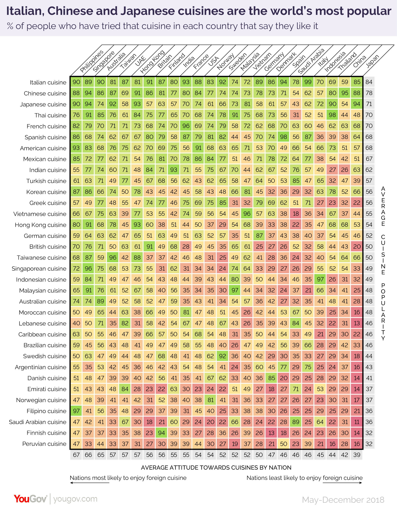

Is Filipino Food Popular Globally?
Filipino cuisine is a reflection of the influences from the country’s History of colonization, trade and migration. While the cuisine is in a constant state of growing and changing, the Filipino culture and cooking techniques are still evident in each dish.
In a 2018 study conducted by YouGov, involving 25,000 people across 24 countries including the Philippines, Thailand, Australia and among others. This study was conducted to learn and gain insights about the food preferences of these countries.
 Photo from YouGovAccording to the results, 67 percent of the Filipinos favored and were open-minded about any cuisine from other countries.Unfortunately, other countries were not the same with the Filipino Cuisine, as the survey results showed that it was under-appreciated by the other countries. There was only an average of 36 percent that said that they like Filipino food together with Saudi Arabian food.
In a positive view, the global popularity of Filipino cuisine is steadily rising. For instance, famous YouTubers such as The Sunbae Club and People Vs Food have introduced Filipino food to their own people in their country.
Thus, this website will also serve as a platform to introduce and encourage other individuals from various nationalities, including those within the Philippines, to try out our food and gain knowledge on the newest trends that would fit or align their food preferences.
Read more at: Filipinos appreciate international cuisine more than any other nationality and Filipinos Are the Most Likely to Enjoy Different Types of International Food